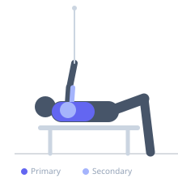
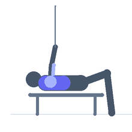

Exercise guide / Cable Low Flye to Press
Cable Low Flye to Press
A combination movement that begins as a low-to-high cable flye targeting the upper pectoralis major, then transitions into a press motion at the top of the arc to fully extend the arms and further load the chest. This two-phase movement recruits both the isolation benefits of the flye and the loading capacity of the press in a single continuous rep.
Primary muscles
pectoralis major clavicular
pectoralis major sternal
Secondary muscles
deltoid anterior
triceps long head
Stabilizers
infraspinatus
Equipment
Cable Machine (Low Pulley)


Starting position
- Stand between two low cable pulleys. Hold one handle in each hand, cables running from low pulleys below hip level. Stand tall with a slight forward lean, arms extended down and to the sides.
Setup
- Set both pulleys to the lowest position. Attach single D-handles. Stand centered between the two stacks.
Steps
- Step 1: Begin with arms extended downward and outward, cables taught from the low pulleys.
- Step 2: Sweep both arms upward and inward in a wide arc — the flye phase — keeping elbows slightly bent.
- Step 3: As the hands meet in front of the chest, transition to a press: bend the elbows and bring the handles toward the chest.
- Step 4: Press the handles forward and together to full arm extension.
- Step 5: Reverse the motion: unpress back to handle-at-chest, then open out and down in the flye return. Repeat.
Coaching cues
- Flye first, then press — two distinct phases per rep
- Lead with the chest, not the arms, on the upward sweep
Breathing
- Exhale through the flye and press phases combined. Inhale on the return.
Range of motion
- Full sweep from low-to-high, then full press extension. The combo requires deliberate transition at the midpoint.
Tempo
- 2-0-1-2 (2s flye up, press out, 2s return)
Common mistakes
- Transitioning to the press too early before the hands meet
- Excessive forward lean that reduces the cable's tension angle effectiveness
- Straightening elbows completely during the flye — maintain a soft bend
Safety
- Use moderate weight — the transition from flye to press can stress the shoulder if too heavy
- Keep core braced throughout to stabilize the torso
Training
- hypertrophy: 10–15 reps
- hypertrophy: 3–4 sets
- Rest: {'hypertrophy': 90}